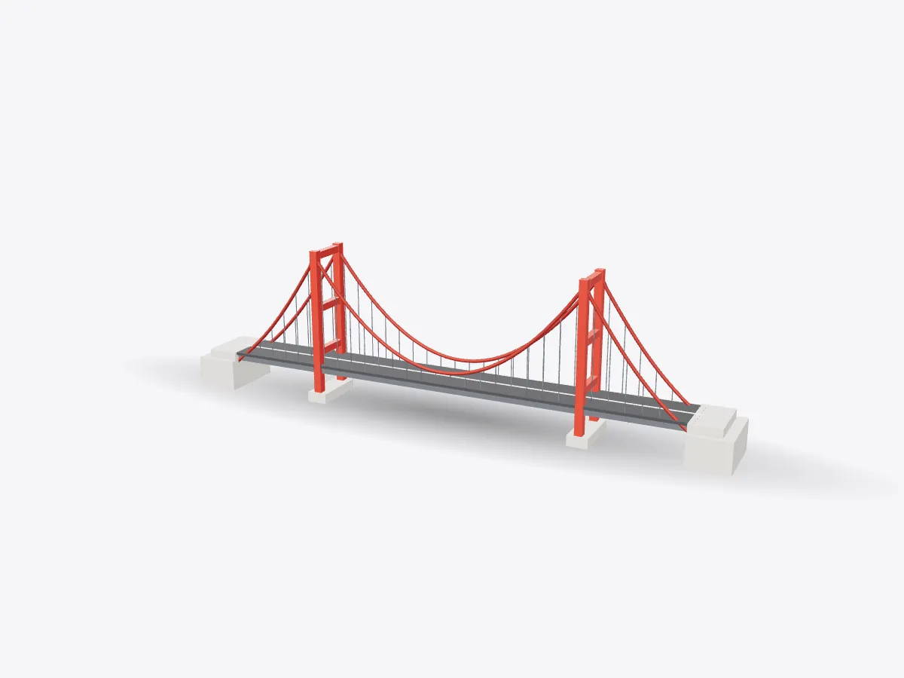

01 / 05
Overview
5 parts, one idea.
See how a suspension bridge carries its load in 3D: towers, main cables, hangers, deck and anchorages. Explode it, slice it and test yourself.
Drag to orbit, pinch or scroll to zoom, tap any part.
How it works · Buildings
The deck hangs. The cables pull. The towers push down and the anchorages hold on. A suspension bridge is a tug of war you can drive across.

Scores are saved on this device only.
01 / 05
Overview
See how a suspension bridge carries its load in 3D: towers, main cables, hangers, deck and anchorages. Explode it, slice it and test yourself.
Drag to orbit, pinch or scroll to zoom, tap any part.
02 / 05
Explode
Keep scrolling and every part slides away from the centre, so you can see how they fit together.
03 / 05
Slice
A section plane sweeps through the model as you scroll. Pick an axis and set the depth yourself.
04 / 05
Parts
Pick a part or tap a glowing dot. It lights up and everything else fades back.
05 / 05
Facts
Türkiye's 1915 Çanakkale Bridge, opened in 2022, has the world's longest suspension span.
Wires in each main cable of San Francisco's Golden Gate Bridge.
Tacoma Narrows collapsed in wind, changing how bridge decks are designed.
Explained
A suspension bridge carries its deck by hanging it from two huge cables. The cables drape over a pair of tall towers and are tied down at each end into massive anchorages. Vertical hangers connect the deck to the cables every few metres. It's the form used for the world's longest spans, because steel wire is extraordinarily strong when you pull on it, and a hanging cable uses that strength very efficiently.
Follow the load and the design makes sense. A truck on the deck pulls down on the nearest hangers. The hangers pull down on the main cables. The cables, in tension, carry that force along their curve to the tops of the towers and on to the anchorages. At the towers, the cables press straight down, so the towers are squeezed in compression and pass the load into their foundations. At the ends, the anchorages resist the cables' pull with their sheer weight and their grip on the rock or soil.
The main cables aren't single ropes. They're spun on site from thousands of parallel high-strength steel wires, pulled across the gap one loop at a time, then squeezed into a round bundle and wrapped for protection. Each of the Golden Gate Bridge's two main cables contains 27,572 wires. Because the wires are parallel, any one breaking takes only a tiny share of the strength away.
A long, light deck can behave like a sail or a wing. In 1940 the first Tacoma Narrows Bridge in Washington State twisted itself apart in a moderate wind, through an effect called aeroelastic flutter. Since then, decks have been made stiffer against twisting, using deep trusses or streamlined steel boxes, and designs are tested in wind tunnels before they're built. Today the longest suspension span in the world belongs to the 1915 Çanakkale Bridge in Türkiye, at 2,023 metres between towers, opened in 2022. Drag the explode slider to separate the towers, cables, hangers, deck and anchorages and see how each one fits into the load path.
D3DDD
D3DDD makes them: product cutaways, exploded views, architectural renders and technical drawings.